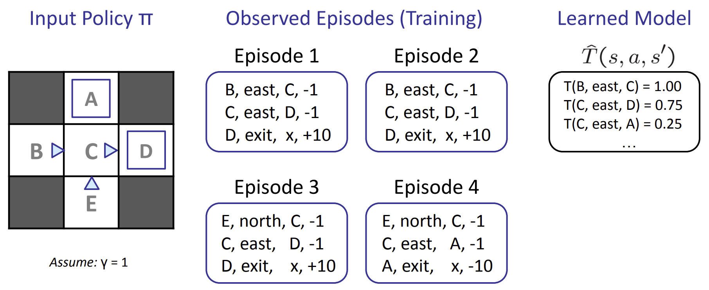

Lec 09 & 10: RL
CS 180 - Introduction to AI¶
Lecture 9&10: Reinforcement Learning¶
上一节课：马尔可夫决策过程，以及用诸如 Value Iteration 和 Policy Iteration 等技术来求解该过程，以计算状态的最优值并提取最优策略。
求解马尔可夫决策过程是 离线规划 (offline planning) 的一个例子，其中 Agent 对转换函数和奖励函数拥有充分的了解，它们预先计算最优动作所需的所有信息，而无需实际采取任何行动。
Next: 在线规划 在在线规划过程中，代理对现实世界中的奖励或转换没有任何先验知识（仍然以马尔可夫决策过程 (MDP) 的形式表示）。在在线规划中，代理必须尝试探索，在此期间它会执行操作并接收反馈，反馈的形式包括它到达的后继状态及其获得的相应奖励。代理会利用这些反馈，通过一个 RL 来估计最优策略，然后再利用这个估计的策略进行开发或奖励最大化。
Setup - 仍然假设是一个马尔可夫决策过程 (MDP)： - 一个状态集合 \(s \in \mathcal{S}\) - 一个行动集合（每个状态）\(\mathcal{A}\) - 一个模型 \(T(s, a, s')\) - 一个奖励函数 \(R(s, a, s')\) - 仍然在寻找一个策略 \(\pi(s)\)
- 不知道 \(T\) 或 \(R\)
1. Model-Based Learning¶
 根据大数定律，随着我们通过让代理经历更多场景收集到越来越多的样本，我们的 \(\hat{T}\) 和 \(\hat{R}\) 模型将会不断改进，其中 \(\hat{T}\) 会收敛到 \(T\)，而 \(\hat{R}\) 则会随着我们发现新的 \((s, a, s')\) 组而获取之前未发现的奖励知识。 在合适的时候可以结束代理的训练，通过使用当前的 \(\hat{T}\) 和 \(\hat{R}\) 模型运行价值或策略迭代来生成策略 \(\pi_{exploit}\)，并使用 \(\pi_{exploit}\) 进行利用，让代理遍历 MDP，采取行动寻求奖励最大化。
2. Model-Free Learning¶
Big Picture * Passive reinforcement learning: Direct evaluation and temporal difference learning * 在被动强化学习中，智能体被赋予一个策略，并在经历事件的过程中学习该策略下状态的值，这正是当 \(T\) 和 \(R\) 已知时，MDP 的策略评估所做的事情。 * Active reinforcement learning: Q-learning * 在此过程中，学习智能体可以使用收到的反馈在学习过程中迭代更新其策略，直到经过充分探索后最终确定最优策略。
Regret: 一开始就在环境中采取最优行动所积累的总奖励与通过运行学习算法所积累的总奖励之间的差异
2.1. Direct Evaluation (Passive RL)¶
 计算得到 \(V^\pi(E) = -2\) 和 \(V^\pi(B) = 8\)，但理论上 \(B\) 和 \(E\) 在 \(\pi\) 下应该具有相同的值。
计算得到 \(V^\pi(E) = -2\) 和 \(V^\pi(B) = 8\)，但理论上 \(B\) 和 \(E\) 在 \(\pi\) 下应该具有相同的值。
这是因为我们的代理处于状态 \(C\) 的 4 次中，它转换到 \(D\) 并获得了 3 次 10 的奖励，转换到 \(A\) 并获得了 1 次 \(-10\) 的奖励。纯属偶然的是，当它唯一一次获得 \(-10\) 奖励时，它的初始状态是 \(E\) ，这严重扭曲了 \(E\) 的估值。
经过足够多的回合后，\(B\) 和 \(E\) 的值将收敛到真实值，但这种情况会导致该过程耗时超过我们的预期。可以通过选择使用我们的第二种被动强化学习算法——时间差分学习来缓解这个问题。
2.2. Temporal Difference Learning (Passive RL)¶
TD Learning 采用从每一次经验中学习的理念，而不是像 Direct Evaluation 那样简单地跟踪总奖励和状态访问次数，并在最后进行学习。
Sample of V(s): $$ \text{sample} = R(s, \pi(s), s') + \gamma V^\pi(s') $$
Update to V(s): $$ V^\pi(s) \leftarrow (1 - \alpha)V^\pi(s) + (\alpha)\text{sample} $$
其中 learning rate \(\alpha \in [0,1]\)，一般从 1 慢慢缩小到 0.
2.3. Q-Learning (Active RL)¶
TD Learning 或 Direct Learning 通常与一些基于模型的学习结合使用，以获取 \(T\) 和 \(R\) 的估计值，从而有效地更新学习代理所遵循的策略。Q Learning 提出直接学习状态的 \(Q\) 值，无需了解任何值、转换函数或奖励函数。因此，\(Q\) 学习完全无需模型（off-policy learning）。
\(Q\) 学习使用以下更新规则来执行所谓的 \(Q\) 值迭代：
2.4. Approximate Q-Learning¶
Q-Learning 占用内存太大，我们可以用特征向量简化： $$ V(s) = w_1f_1(s) + w_2f_2(s) + \dots + w_nf_n(s) $$
3. Exploration vs. Exploitation / 探索 vs. 利用¶
- Exploration - 通过尝试不同的行为来得到一个最佳的策略，得到最大奖励的策略。
- Exploitation - 不去尝试新的东西，就采取已知的可以得到很大奖励的行为。
3.1. \(\epsilon\) Greedy¶
遵循 \(\epsilon\) Greedy 的代理定义了某个概率 \(0 \le \epsilon \le 1\)，并且会以概率 \(\epsilon\) 随机行动和探索。
如果为 \(\epsilon\) 选择了一个较大的值，那么即使在学习了最优策略之后，代理仍然会以随机的方式行事。同样，为 \(\epsilon\) 选择了一个较小的值意味着代理将很少进行探索，从而导致 \(Q\) 学习（或任何其他选定的学习算法）非常缓慢地学习最优策略。
为了解决这个问题，必须手动调整 \(\epsilon\) 并随着时间的推移降低才能看到结果。
3.2. Exploration Function¶
其中 \(f\) 表示探索函数。设计探索函数有一定的灵活性，但通常的选择是使用：